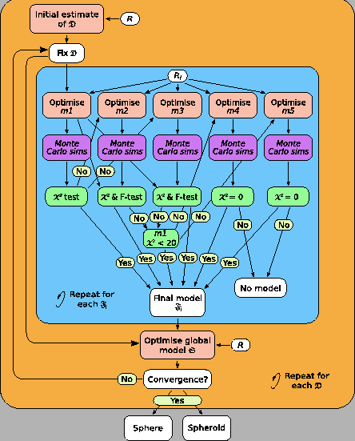
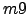

Next: The rest Up: Optimisation of all model-free Previous: Optimisation of all model-free Contents Index
The sample script which demonstrates the optimisation of all model-free models from  to  of individual residues is `mf_multimodel.py'. The text of the script is:
# Script for model-free analysis.
# Set the run names (also the names of preset model-free models).
runs = [`m0', `m1', `m2', `m3', `m4', `m5', `m6', `m7', `m8', `m9']
# Nuclei type
nuclei(`N')
# Loop over the runs.
for name in runs:
# Create the run.
run.create(name, `mf')
# Load the sequence.
sequence.read(name, `noe.500.out')
# Load the relaxation data.
relax_data.read(name, `R1', `600', 600.0 * 1e6, `r1.600.out')
relax_data.read(name, `R2', `600', 600.0 * 1e6, `r2.600.out')
relax_data.read(name, `NOE', `600', 600.0 * 1e6, `noe.600.out')
relax_data.read(name, `R1', `500', 500.0 * 1e6, `r1.500.out')
relax_data.read(name, `R2', `500', 500.0 * 1e6, `r2.500.out')
relax_data.read(name, `NOE', `500', 500.0 * 1e6, `noe.500.out')
# Setup other values.
diffusion_tensor.init(name, 1e-8, fixed=1)
value.set(name, 1.02 * 1e-10, `bond_length')
value.set(name, -160 * 1e-6, `csa')
# Select the model-free model.
model_free.select_model(run=name, model=name)
# Minimise.
grid_search(name, inc=11)
minimise(`newton', run=name)
# Write the results.
results.write(run=name, file=`results', force=1)
# Save the program state.
state.save(`save', force=1)